Generally speaking, testing refers to the act of evaluating / verifying if a software product or application does what we expect it to do.
There are lots of different types of testing. To name just a few:
Unit testing, where isolated source code (e.g. functions, modules) is tested to validate expected behavior
Integration testing, where various software units or modules are tested as a combined unit (e.g. testing if your app and an API can communicate as intended)
Performance testing (which includes things like load testing, stress testing, etc.), where software is tested for its responsiveness and stability under a particular workload
Tests can be:
Performed manually, where a person interacts with code (e.g. tests a function, plays with an app feature) to identify bugs, errors, anomalies, etc.
Automated, where a person uses test scripts and programs to automate user interactions and validate assumed behavior
Here, we’ll focus on automated unit testing
Generally speaking, testing refers to the act of evaluating / verifying if a software product or application does what we expect it to do.
There are lots of different types of testing. To name just a few:
Unit testing, where isolated source code (e.g. functions, modules) is tested to validate expected behavior
Integration testing, where various software units or modules are tested as a combined unit (e.g. testing if your app and an API can communicate as intended)
Performance testing (which includes things like load testing, stress testing, etc.), where software is tested for its responsiveness and stability under a particular workload
Test can be:
Performed manually, where a person interacts with code (e.g. tests a function, plays with an app feature) to identify bugs, errors, anomalies, etc.
Automated, where a person uses test scripts and programs to automate user interactions and validate assumed behavior
For automated unit testing, we need . . .
some small unit of code you want to test (e.g. a function)
assertions i.e. statements or conditions that verify the expected behavior of your unit of code (in other words, does the actual output match the expected output?)
a framework for writing and executing your tests
Different languages have different testing frameworks. For example:
Before we try writing tests for a Shiny app, let’s first consider a small (non-Shiny) example using the {testthat} framework. We’ll explore a testable unit of code, define assertions, and write / run tests. You can fork and clone this GitHub repository or create / add code to your own.
1. Let’s consider this small unit of code:
Provide this function with a name, and it will return a greeting! If you don’t give it a character string it throws a helpful error message:
~/R/say_hello.R
say_hello <-function(name =NULL) {if (!is.character(name)) {stop("Please include a name as a character string for me to greet!") } else { greeting <-paste0("Hello ", name, "!")print(greeting) }}
Manually test it out:
Console
say_hello("Sam")
[1] "Hello Sam!"
What happens when you give it something unexpected? For example:
Console
say_hello(123)say_hello()
2. Define your assertions
Before we write any tests, it’s helpful to jot down (in your own words) the expected behavior of this unit of code (say_hello()). These expectations will form the basis of the assertions made in your tests.
I find it helpful to make a table that outlines both (a) what possible actions can be taken by a user? and (b) what are the expected outputs / behaviors that result from those actions?
For example:
Action(s)
Expectation(s)
User provides a name as a character string as intended, e.g. "Sam"
Function returns "Hello Sam!"
User provides a numeric value, e.g. 123
Function returns an error message that reads, "Please include a name as a character string for me to greet!"
User runs the function without providing an input
Function returns an error message that reads, "Please include a name as a character string for me to greet!"
3. Build and run tests using {testthat}
The {testthat} package is the go-to framework for writing unit tests in R.
The best (and encouraged) way to build and run these tests is by first turning your project into an R package. While we won’t be doing that here, we’ll still use {testthat} functions to construct our unit tests. Repository structure1 is important (regardless of turning your project into a package) – be sure to follow the structure as defined by our example repo.
3. Build and run tests using {testthat}
The anatomy of a {testthat} tests generally looks like this:
test_that("a short descriptive name for your test", {expect_output(my_function(<a_known_input>, ...), <the_resulting_expected_output>) })
For example:
test_that("say_hello works with a string", {expect_output(say_hello("Sam"), "Hello Sam!") })
there are a number of different expect_*() functions you might use
keep tests small:
easier to debug
lets you test edge cases and specific scenarios
easier to maintain (can easily update / remove a specific small test than untangle a large, complex one)
encourages modular code design
act as mini-examples / documentation about how your codes should behave
3. Build and run tests using {testthat}
Tests files must begin with the prefix, test. By convention, this is followed by the name of the file / function being tested. For example, if your function is in a file named say_hello.R, the corresponding test file should be named test_say_hello.R.
Be sure to import the {testthat} package and source your function file at the top of your test file, then add tests for each of your table items (see this slide). Consider which expect_*() function is most appropriate for each test.
~/tests/test_say_hello.R
#..........................load packages.........................library(testthat)#...........................source fxn...........................source(here::here("R", "say_hello.R"))#..............................tests.............................test_that("say_hello works with a string", { expect_output(say_hello("Sam"), "Hello Sam!")})test_that("say_hello throws error when numeric value is provided", {expect_error(say_hello(123), "Please include a name as a character string for me to greet!")})test_that("say_hello throws error when no argument is provided", {expect_error(say_hello(), "Please include a name as a character string for me to greet!")})
One more important note (actually, a few)
As much as you try, testing will never be exhaustive. You can only test for scenarios that you think of.
The goal is to put yourself in the shoes of a user, and test scenarios that you think your users will encounter. If you test those use-cases, you’ll cover the majority of expectations.
As users use your code or interact with your app, they’ll stumble upon and reveal use-cases / scenarios that you hadn’t tested for…and you can update your code / write tests accordingly.
Over time, your ability to identify both how users will use your software and what to test will improve.
Okay, but should I be testing my apps?
Yes! Consider this workflow (which should look a bit familiar) . . .
Add / adjust some reactivity
Click “Run App”
Manually experiment with the new feature to see if it works
Rinse & repeat
But what if you have 20 apps? Or many team members?
It becomes increasingly more challenging to remember all the features you need to test, or how each works. Things can also get lost in translation with manual testing (e.g. can you explain to your coworker(s) all of your app’s features and make sure that they manually test it properly?).
It’s almost inevitable that our app(s) will break
There are lots of reasons why this happens, but to name a few:
you make changes to your app (e.g. add new features, refactor code)
an external data source stops working or returns data in a different format than that expected by your app
Manually testing Shiny apps is takes a lot of time and effort, is often inconsistent, and doesn’t scale well (e.g. for larger apps, many apps, or for larger teams of collaborators).
It can save a lot of time and headache to have an automated system that checks if your app is working as expected.
Enter the {shinytest2} package
The {shinytest2} package provides useful tools for unit testing Shiny apps. We’ll use these unit tests to ensure that desired app behavior remains consistent, even after changes to the app’s code (the documentation refers to this type of unit testing as regression testing – we’ll use these tests to verify that app behavior does not regress).
From the {shinytest2} documentation:
“{shinytest2} uses {testthat}’s snapshot-based testing strategy. The first time it runs a set of tests for an application, it performs some scripted interactions with the app and takes one or more snapshots of the application’s state. These snapshots are saved to disk so that future runs of the tests can compare their results to them.”
Let’s imagine . . .
Your boss has tasked you with building a Shiny app, and asks that you begin with a feature that greets users by name. If you’ve been following along with previous course modules, you can create a new folder, testing-app/, in your GitHub repo and add the following files. Alternatively, fork and clone this repository.
ui <-fluidPage(# Feature 1 ------------------------------------------------------------------h1("Feature 1"),# fluidRow (Feature 1: greeting) ----fluidRow(# greeting sidebarLayout ----sidebarLayout(# greeting sidebarPanel ----sidebarPanel(textInput(inputId ="name_input",label ="What is your name?"),actionButton(inputId ="greeting_button_input",label ="Greet"), ), # END greeting sidebarPanel# greeting mainPanel ----mainPanel(textOutput(outputId ="greeting_output"), ) # END greeting mainPanel ) # END greeting sidebarLayout ), # END fluidRow (Feature 1: greeting)) # END fluidPage
~/testing-app/server.R
server <-function(input, output) {# Feature 1 ------------------------------------------------------------------ output$greeting_output <-renderText({req(input$greeting_button_input) # req(): textOutput doesn't appear until button is first pressedpaste0("Hello ", isolate(input$name_input), "!") # isolate(): prevents textOutput from updating until button is pressed again }) }
Manually test this feature
Run the app and play around with the greeting generator:
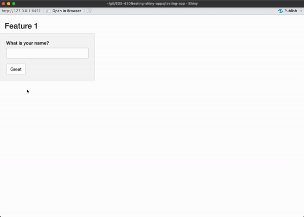
Let’s say that you are satisfied with your work (yay!) and are now ready to write some automated tests to ensure consistent behavior as you continue to build out additional features.
Write down your assertions
Just like we did in our previous non-Shiny example, let’s jot down the expected behaviors of our application. These will form the basis of the assertions made in our tests. It’s again helpful to create a table that outlines both (a) what actions can be taken by a user? and (b) what are the expected outputs / behaviors that result from those actions?
For example:
Action(s)
Expectation(s)
Type [some text value] in text box > click Greet button
Greeting output is “Hello [some text value]!”
Type [some text value] in text box > click Greet button > type [some other text value] in text box > click Greet button
Greeting output is “Hello [some text value]!”, then updates to “Hello [some other text value]!”
Click Greet button
Greeting output is “Hello !”
Turn “plain language” assertions into actual tests using the {shinytest2} workflow
Generally speaking, that workflow looks something like this:
(1) Run shinytest2::record_test(<app-directory>) in your Console to launch the app recorder in a browser window
(2) Interact with your application and tell the recorder to make an expectation of the app’s state
(3) Give your test a unique name and quit the recorder to save and execute your tests
We’ll repeat this workflow to write tests for each of our three assertions.
FYI (a warning about chromote time outs)
{shinytest2} uses tests to simulating user interactions in a headless browser (i.e. a browser without a graphical user interface; often used for testing web pages). {chromote} is the R-based tool for opening a headless Chromium-based (e.g. Chrome) browser.
If you receive the following error message after running, shinytest2::record_test("testing-app"), you’ll need to restart R:
Caused by error:! Chromote: timed out waiting for response to command Target.createTarget
It’s a pretty annoying error, which seems to be an ongoing issue with {chromote}. R may be slow to restart.
Let’s test our first assertion . . .
…which is that when a user types [some text value] into the text box and clicks the Greet button (i.e. the actions), the greeting output will return Hello [some text value]! (i.e. the expectation). We’ll substitute a known value (e.g. Sam) for [some text value] in our test.
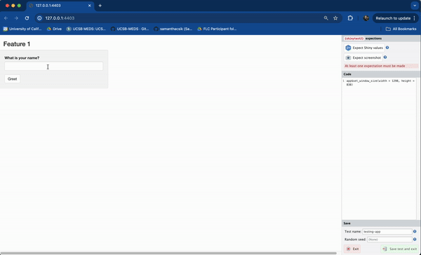
Steps:
(1) Run shinytest2::record_test("testing-app") in the Console
(2) Type Sam into the text box > click the Greet button > click Expect Shiny Values
(3) Give the test a unique name (e.g. one-name-greeting) > click Save test and exit
(4) The test recorder will quit, and your test will automatically execute (it should pass!)
Notice that your actions (e.g. typing text, clicking the button) are recorded as code in the right-hand panel – this is your test code, and it’ll be saved when you quit the recorder.
Your test should automatically run (and pass!)
After quitting the test recorder, the following will happen:
a test script will be saved in testing-app/tests/testthat/test-shinytest2.R
if you’re running in the RStudio IDE, test-shinytest2.R will automatically open in the editor
shinytest2::test_app() is run behind the scenes to execute the test script
You should see something like this in your Console:
• Saving test runner: tests/testthat.R✔ Adding 'shinytest2::load_app_support(test_path("../.."))' to 'tests/testthat/setup-shinytest2.R'• Saving test file: tests/testthat/test-shinytest2.R☐ Modify/Users/samanthacsik/git/EDS-296-1W/shinytest2-unit-tests/testing-app/tests/testthat/test-shinytest2.R.• Running recorded test: tests/testthat/test-shinytest2.RLoading required package: testthat✔ | F W S OK | Context✔ |21| shinytest2 [2.1s] ────────────────────────────────────────────────────────────────────────────────────────────────────Warning (test-shinytest2.R:8:3): {shinytest2} recording: one-name-greetingAdding new file snapshot:'tests/testthat/_snaps/shinytest2/one-name-greeting-001_.png'Warning (test-shinytest2.R:8:3): {shinytest2} recording: one-name-greetingAdding new file snapshot:'tests/testthat/_snaps/shinytest2/one-name-greeting-001.json'────────────────────────────────────────────────────────────────────────────────────────────────────══ Results ═════════════════════════════════════════════════════════════════════════════════════════Duration:2.1 s[ FAIL 0| WARN 2| SKIP 0| PASS 1 ]
Understanding the contents of tests/
The first time you record a test, {shinytest2} generates number of directories / subdirectories, along with a bunch of files. The next few slides explain these in more detail.
After creating your first test, your repo structure should look something like this:
.├── testing-app/ │ └── global.R │ └── ui.R │ └── server.R │ └── tests/ # generated the first time you record and save a test │ └── testthat.R # see note below│ └── testthat/ │ └── setup-shinytest2.R # see note below│ └── test-shinytest2.R # see next slides│ └── snaps/ │ └── shinytest2/ │ └── *001.json # see next slides│ └── *001_.png # see next slides
testthat.R: includes the code, shinytest2::test_app(), which is executed when you click the Run Tests button in RStudio
setup-shinytest2.R: includes the code, shinytest2::load_app_support(), which loads any application support files (e.g. global.R and / or anything inside R/) into the testing environment
test-shinytest2.R (test code)
The anatomy of our test should look a bit similar those generated for our say_hello() function using {testthat}. Here, however, we need to spin up our Shiny app in a headless browser, then simulate user interactions using the appropriate functions. All tests will be saved to tests/testthat/test-shinytest2.R
~/testing-app/tests/testthat/test-shinytest2.R
library(shinytest2)# runs our testtest_that("{shinytest2} recording: one-name-greeting", {# start Shiny app in a new R session along with chromote's headless browser that's used to simulate user actions app <- AppDriver$new(test_path("../.."), name ="one-name-greeting", height =719, width =595)# set the textInput (with Id `name_input`) to the value `Sam` app$set_inputs(name_input ="Sam")# click the actionButton (with Id `greeting_button_input`) app$click("greeting_button_input")# save the expected input, output, and export values to a JSON snapshot and generates a screenshot of the app app$expect_values()})
The snaps/ folder
When shinytest2::test_app() runs your test code, it plays back the specified actions (e.g. setting the textInput to Sam, then clicking the Greet button), and records your application’s resulting state as a snapshot. Snapshots are saved to the tests/testthat/shinytest2/_snaps/ folder. You should see two different snapshot files:
one-name-greeting-001_.png, a screenshot of the app when app$expect_values() was called:
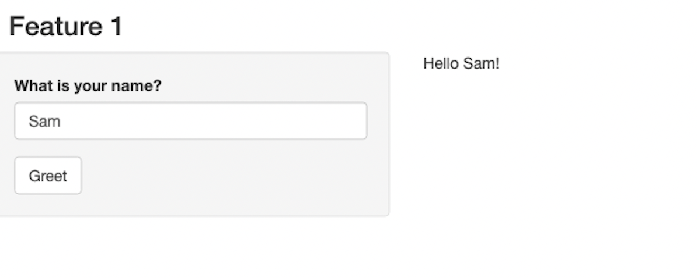
one-name-greeting-001.json, a JSON representation of the state of the app when app$expect_values() was called:
You can think of your test as a recipe for {shinytest2} to follow to simulate user actions (i.e. inputs).
These simulations are performed programmatically whenever you click Run Test.
The JSON file defines your test’s expected outputs given known inputs.
When you rerun your test, the same user actions (inputs) are simulated and the resulting outputs are compared against prior snapshots. We expect the resulting outputs to be the same each time. If the resulting outputs differ from our expectations, the test will fail.
The screenshot (*_.png file) can be used to visually inspect your app’s state at the time of your test.
The *_.png file differs from a *.png file (which we did not capture). *.png files are screenshots of the application from app$expect_screenshot() (i.e. by clicking Expect screenshot in the app recorder), which you can use to ensure that the visual state of the application does not change. If subsequent screenshots differ (even by just a pixel!), your test will fail. This type of testing is quite brittle, and we won’t be covering it further.
All of the above files should be tracked with git.
Rerun your test
Rerun your test by clicking on the Run Tests button, which is visible when test-shinytest2.R is open. It should still pass (we haven’t changed anything since our first test run)!
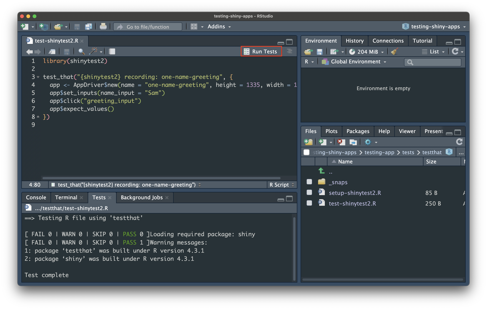
Test our remaining assertions
Action(s)
Expectation(s)
Type [some text value] in text box > click Greet button
Greeting output is “Hello [some text value]!”
Type [some text value] in text box > click Greet button > type [some other text value] in text box > click Greet button
Greeting output is “Hello [some text value]!”, then updates to “Hello [some other text value]!”
Click Greet button
Greeting output is “Hello !”
03:00
test-shinytest2.R should now look like this:
Or at least fairly close to this (maybe you chose different names to test with or had a different viewport size):
You can rerun all your tests at once by clicking the Run Tests button again (they should all pass!).
Your boss requests an improvement on feature 1
Your boss is excited to see your progress, but would love to see an informative message pop up when a user clicks the Greet button without first typing in a name (currently, clicking the Greet button without typing a name will return “Hello !”… which is a bit odd). You make the following update to your app:
~/testing-app/server.R
server <-function(input, output) {# Feature 1 ------------------------------------------------------------------# observe() automatically re-executes when dependencies change (i.e. when `name_input` is updated), but does not return a result ----observe({# if the user does not type anything before clicking the button, return the message, "Please type a name, then click the Greet button." ----if (nchar(input$name_input) ==0) { output$greeting_output <-renderText({"Please type a name, then click the Greet button." })# if the user does type a name before clicking the button, return the greeting, "Hello [name]!" ---- } else { output$greeting_output <-renderText({paste0("Hello ", isolate(input$name_input), "!") }) } }) |># Execute the above observer once the button is pressed ----bindEvent(input$greeting_button_input)}
Rerun your tests after making your update
Our first tests pass, but the most recent one failed . You’ll see something like this to start:
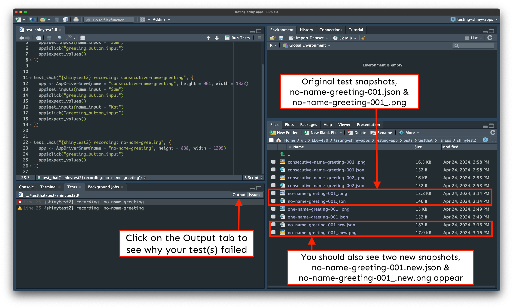
Click on the Output tab for more information on why the test failed (see next slide).
The Output tab tells us what caused our test to fail
We see that our no-name-greeting test failed and learn what caused that failure:
==> Testing R file using 'testthat'[ FAIL 0| WARN 1| SKIP 0| PASS 0 ]Loading required package: shiny[ FAIL 1| WARN 2| SKIP 0| PASS 3 ]── Warning (test-shinytest2.R:1:1): (code run outside of `test_that()`) ────────package ‘shinytest2’ was built under R version 4.5.2Backtrace: ▆1. └─base::library(shinytest2) at test-shinytest2.R:1:12. └─base (local) testRversion(pkgInfo, package, pkgpath)── Failure (test-shinytest2.R:28:3): {shinytest2} recording: no-name-greeting ──Snapshot of `file` has changed.Differences:old[4:10] vs new[4:10]"name_input":""},"output": {-"greeting_output":"Hello !"+"greeting_output":"Please type a name, then click the Greet button." },"export": {* Run testthat::snapshot_accept("shinytest2/", "testing-app/tests/testthat") to accept the change.* Run testthat::snapshot_review("shinytest2/", "testing-app/tests/testthat") to review the change.Backtrace: ▆1. └─app$expect_values() at test-shinytest2.R:28:32. └─shinytest2:::app_expect_values(...)3. └─shinytest2:::app__expect_snapshot_file(...)4. ├─base::withCallingHandlers(...)5. └─testthat::expect_snapshot_file(...)── Warning (test-shinytest2.R:28:3): {shinytest2} recording: no-name-greeting ──Diff in snapshot file `shinytest2no-name-greeting-001.json`< before > after @@5,5/5,5@@ }, "output": { <"greeting_output":"Hello !">"greeting_output":"Please type a name, then click the Greet button." }, "export": { [ FAIL 1| WARN 2| SKIP 0| PASS 3 ]Warning messages:1: package ‘testthat’ was built under R version 4.5.22: package ‘shiny’ was built under R version 4.5.2Test complete
We’ll want to update our expected results
Our test correctly failed (the expected output was different)! But we’ll want to update our test’s expected output so that it reflects the changes we made to our app (i.e. that when a user clicks the Greet button without first typing a name, the text “Please type a name before clicking the Greet button.” is printed).
We can use use testthat::snapshot_review(), which opens a Shiny app for visually comparing differences (aka diffs) between snapshots and accepting (or rejecting) updates.
The app allows for a few different ways to view snapshot diffs. Click Accept for both the PNG and JSON files, then close the window:
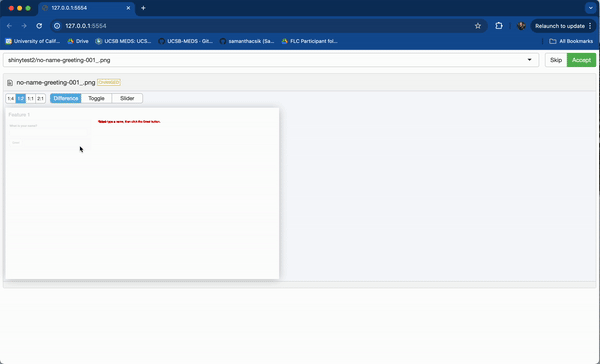
Check out your updated snapshots
Check out no-name-greeting-001_.png and no-name-greeting-001.json snapshots, which should be updated to reflect the new test expectations.
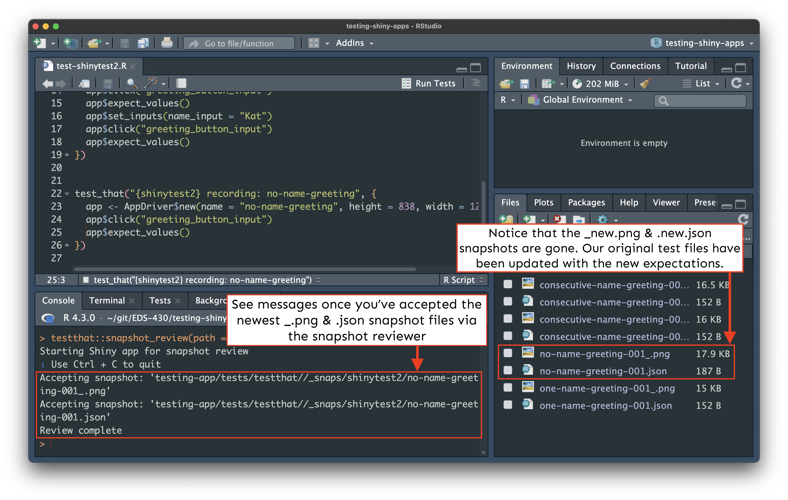
Your boss requests another feature!
Your boss is jazzed about your latest improvements, and now asks you to add a data viz – a scatterplot of penguin bill depths by bill lengths, with a pickerInput that allows users to filter the data by species. You update your app:
ui <-fluidPage(# Feature 1 ------------------------------------------------------------------h1("Feature 1"),# fluidRow (Feature 1: greeting) ----fluidRow(# greeting sidebarLayout ----sidebarLayout(# greeting sidebarPanel ----sidebarPanel(textInput(inputId ="name_input",label ="What is your name?"),actionButton(inputId ="greeting_button_input",label ="Greet"), ), # END greeting sidebarPanel# greeting mainPanel ----mainPanel(textOutput(outputId ="greeting_output"), ) # END greeting mainPanel ) # END greeting sidebarLayout ), # END fluidRow (Feature 1: greeting)hr(),# Feature 2 ------------------------------------------------------------------h1("Feature 2"),# fluidRow (Feature 2: plot) -----fluidRow(# plot sidebarLayout ----sidebarLayout(# plot sidebarPanel ----sidebarPanel(# penguin spp pickerInput -----pickerInput(inputId ="penguin_spp_input", label ="Select species:",choices =c("Adelie", "Chinstrap", "Gentoo"),selected =c("Adelie", "Chinstrap", "Gentoo"),multiple =TRUE,options =pickerOptions(actionsBox =TRUE)), # END penguin spp pickerInput ), # END plot sidebarPanel# plot mainPanel ----mainPanel(plotOutput(outputId ="scatterplot_output") ) # END plot mainPanel ) # END plot sidebarLayout ) # END fluidRow (Feature 2: plot)) # END fluidPage
~/testing-app/server.R
server <-function(input, output) {# Feature 1 ------------------------------------------------------------------# observe() automatically re-executes when dependencies change (i.e. when `name_input` is updated), but does not return a result ----observe({# if the user does not type anything before clicking the button, return the message, "Please type a name, then click the Greet button." ----if (nchar(input$name_input) ==0) { output$greeting_output <-renderText({"Please type a name, then click the Greet button." })# if the user does type a name before clicking the button, return the greeting, "Hello [name]!" ---- } else { output$greeting_output <-renderText({paste0("Hello ", isolate(input$name_input), "!") }) } }) |># Execute the above observer once the button is pressed ----bindEvent(input$greeting_button_input)# Feature 2 ------------------------------------------------------------------# filter penguin spp (scatterplot) ---- filtered_spp_scatterplot_df <-reactive({validate(need(length(input$penguin_spp_input) >0, "Please select at least one penguin species to visualize data for.")) penguins |>filter(species %in% input$penguin_spp_input) })# render scatterplot ---- output$scatterplot_output <-renderPlot({ggplot(na.omit(filtered_spp_scatterplot_df()),aes(x = bill_length_mm, y = bill_depth_mm,color = species, shape = species)) +geom_point() +geom_smooth(method ="lm", se =FALSE, aes(color = species)) +scale_color_manual(values =c("Adelie"="darkorange", "Chinstrap"="purple", "Gentoo"="cyan4")) +scale_shape_manual(values =c("Adelie"=19, "Chinstrap"=17, "Gentoo"=15)) +labs(x ="Flipper length (mm)", y ="Bill length (mm)",color ="Penguin species", shape ="Penguin species") +theme(legend.position ="bottom") })}
Run your app & play around with the new feature
Try out the pickerInput and identify different actions / scenarios that a user may encounter which you’d like to write tests for.
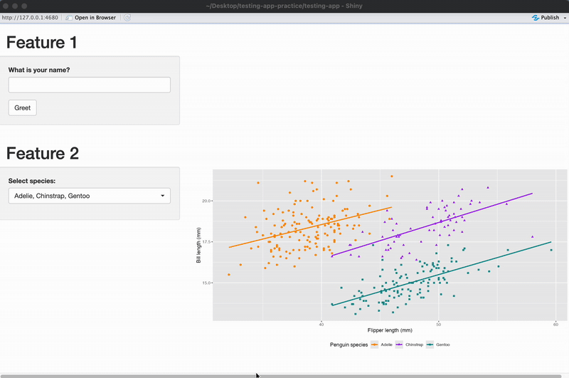
Your boss gives you the green light to start writing tests.
Begin by jotting down some assertions
Chat with the person(s) next to you and try to come up with a few different actions / scenarios a user may encounter with Feature 2. You do not need to describe every single possible scenario, but ensure that they are varied and represent different user interactions.
03:00
Action(s)
Expectation(s)
Select all 3 species (no action / default state)
A scatterplot with all three species’ data is rendered
Deselect Adelie
A scatterplot with just Gentoo & Chinstrap data is rendered
Click Deselect All > Select Gentoo > Click Select All
An error message, “Please select at least one penguin species to visualize data for.” is returned > A scatterplot with just Gentoo data is rendered > A scatterplot with all three species’ data is rendered
Okay, let’s write our first test for feature 2!
Repeat the steps from earlier:
(1) Run shinytest2::record_test("testing-app") in the Console
(2) Click Expect Shiny Values (to capture the default state, i.e. all three species selected by default)
(3) Give the test a unique name (e.g. default-three-spp) > click Save test and exit
(4) The test recorder will quit, and your test will automatically execute
What happens?
All of our feature 1 tests failed??? What???
Explore the diffs in your Console
Your console should look similar to this:
Listening on http://127.0.0.1:4680{shiny} R stderr ----------- Loading required package: shiny{shiny} R stderr ----------- Warning: package ‘shiny’ was built under R version 4.3.1{shiny} R stderr ----------- Running application in test mode.{shiny} R stderr ----------- Warning: package ‘ggplot2’ was built under R version 4.3.1{shiny} R stderr ----------- Warning: package ‘readr’ was built under R version 4.3.1{shiny} R stderr ----------- Warning: package ‘dplyr’ was built under R version 4.3.1{shiny} R stderr ----------- Warning: package ‘stringr’ was built under R version 4.3.1{shiny} R stderr ----------- Warning: package ‘shinyWidgets’ was built under R version 4.3.1{shiny} R stderr -----------{shiny} R stderr ----------- Listening on http://127.0.0.1:6652{shiny} R stderr -----------`geom_smooth()` using formula ='y ~ x'{shiny} R stdout ----------- ── Attaching core tidyverse packages ──────────────────────── tidyverse 2.0.0 ──{shiny} R stdout ----------- ✔ dplyr 1.1.4 ✔ readr 2.1.5{shiny} R stdout ----------- ✔ forcats 1.0.0 ✔ stringr 1.5.1{shiny} R stdout ----------- ✔ ggplot2 3.5.0 ✔ tibble 3.2.1{shiny} R stdout ----------- ✔ lubridate 1.9.2 ✔ tidyr 1.3.0{shiny} R stdout ----------- ✔ purrr 1.0.2{shiny} R stdout ----------- ── Conflicts ────────────────────────────────────────── tidyverse_conflicts() ──{shiny} R stdout ----------- ✖ dplyr::filter() masks stats::filter(){shiny} R stdout ----------- ✖ dplyr::lag() masks stats::lag(){shiny} R stdout ----------- ℹ Use the conflicted package (<http://conflicted.r-lib.org/>) to force all conflicts to become errors{shiny} R stderr -----------`geom_smooth()` using formula ='y ~ x'• Saving test file: tests/testthat/test-shinytest2.R• Modify '/Users/samanthacsik/Desktop/testing-app-practice/testing-app/tests/testthat/test-shinytest2.R'• Running recorded test: tests/testthat/test-shinytest2.R✔ | F W S OK | Context✖ |461| shinytest2 [10.0s] ────────────────────────────────────────────────────────────────────────────────────────────────────────────────────────Failure (test-shinytest2.R:7:3): {shinytest2} recording: one-name-greetingSnapshot of `file` to 'shinytest2/one-name-greeting-001.json' has changedRun testthat::snapshot_review('shinytest2/') to review changesBacktrace: ▆1. └─app$expect_values() at test-shinytest2.R:7:32. └─shinytest2:::app_expect_values(...)3. └─shinytest2:::app__expect_snapshot_file(...)4. ├─base::withCallingHandlers(...)5. └─testthat::expect_snapshot_file(...)Warning (test-shinytest2.R:7:3): {shinytest2} recording: one-name-greetingDiff in snapshot file `shinytest2one-name-greeting-001.json`< before > after @@2,9/2,58@@"input": { "greeting_button_input":1, <"name_input":"Sam">"name_input":"Sam", >"penguin_spp_input": [ >"Adelie", >"Chinstrap", >"Gentoo"> ] }, "output": { <"greeting_output":"Hello Sam!">"greeting_output":"Hello Sam!", >"scatterplot_output": { >"src":"[image data hash: 728c0875df36ff065ee4688ef08088ac]",>"width":841.328125, >"height":400, >"alt":"Plot object", >"coordmap": { >"panels": [ > { >"panel":1, >"row":1, >"col":1, >"panel_vars": { >> }, >"log": { >"x": null, >"y": null }, >"domain": { >"left":30.725, >"right":60.975, >"bottom":12.68, >"top":21.92> }, >"mapping": { >"x":"bill_length_mm", >"y":"bill_depth_mm", >"colour":"species", >"shape":"species"> }, >"range": { >"left":40.26005993150689, >"right":835.5205479452055, >"bottom":329.6486649310203, >"top":5.479452054794522> } > } > ], >"dims": { >"width":841.328125, >"height":400> } > } > } > }, "export": { Failure (test-shinytest2.R:15:3): {shinytest2} recording: consecutive-name-greetingSnapshot of `file` to 'shinytest2/consecutive-name-greeting-001.json' has changedRun testthat::snapshot_review('shinytest2/') to review changesBacktrace: ▆1. └─app$expect_values() at test-shinytest2.R:15:32. └─shinytest2:::app_expect_values(...)3. └─shinytest2:::app__expect_snapshot_file(...)4. ├─base::withCallingHandlers(...)5. └─testthat::expect_snapshot_file(...)Warning (test-shinytest2.R:15:3): {shinytest2} recording: consecutive-name-greetingDiff in snapshot file `shinytest2consecutive-name-greeting-001.json`< before > after @@2,9/2,58@@"input": { "greeting_button_input":1, <"name_input":"Sam">"name_input":"Sam", >"penguin_spp_input": [ >"Adelie", >"Chinstrap", >"Gentoo"> ] }, "output": { <"greeting_output":"Hello Sam!">"greeting_output":"Hello Sam!", >"scatterplot_output": { >"src":"[image data hash: 728c0875df36ff065ee4688ef08088ac]",>"width":841.328125, >"height":400, >"alt":"Plot object", >"coordmap": { >"panels": [ > { >"panel":1, >"row":1, >"col":1, >"panel_vars": { >> }, >"log": { >"x": null, >"y": null }, >"domain": { >"left":30.725, >"right":60.975, >"bottom":12.68, >"top":21.92> }, >"mapping": { >"x":"bill_length_mm", >"y":"bill_depth_mm", >"colour":"species", >"shape":"species"> }, >"range": { >"left":40.26005993150689, >"right":835.5205479452055, >"bottom":329.6486649310203, >"top":5.479452054794522> } > } > ], >"dims": { >"width":841.328125, >"height":400> } > } > } > }, "export": { Failure (test-shinytest2.R:18:3): {shinytest2} recording: consecutive-name-greetingSnapshot of `file` to 'shinytest2/consecutive-name-greeting-002.json' has changedRun testthat::snapshot_review('shinytest2/') to review changesBacktrace: ▆1. └─app$expect_values() at test-shinytest2.R:18:32. └─shinytest2:::app_expect_values(...)3. └─shinytest2:::app__expect_snapshot_file(...)4. ├─base::withCallingHandlers(...)5. └─testthat::expect_snapshot_file(...)Warning (test-shinytest2.R:18:3): {shinytest2} recording: consecutive-name-greetingDiff in snapshot file `shinytest2consecutive-name-greeting-002.json`< before > after @@2,9/2,58@@"input": { "greeting_button_input":2, <"name_input":"Kat">"name_input":"Kat", >"penguin_spp_input": [ >"Adelie", >"Chinstrap", >"Gentoo"> ] }, "output": { <"greeting_output":"Hello Kat!">"greeting_output":"Hello Kat!", >"scatterplot_output": { >"src":"[image data hash: 728c0875df36ff065ee4688ef08088ac]",>"width":841.328125, >"height":400, >"alt":"Plot object", >"coordmap": { >"panels": [ > { >"panel":1, >"row":1, >"col":1, >"panel_vars": { >> }, >"log": { >"x": null, >"y": null }, >"domain": { >"left":30.725, >"right":60.975, >"bottom":12.68, >"top":21.92> }, >"mapping": { >"x":"bill_length_mm", >"y":"bill_depth_mm", >"colour":"species", >"shape":"species"> }, >"range": { >"left":40.26005993150689, >"right":835.5205479452055, >"bottom":329.6486649310203, >"top":5.479452054794522> } > } > ], >"dims": { >"width":841.328125, >"height":400> } > } > } > }, "export": { Failure (test-shinytest2.R:25:3): {shinytest2} recording: no-name-greetingSnapshot of `file` to 'shinytest2/no-name-greeting-001.json' has changedRun testthat::snapshot_review('shinytest2/') to review changesBacktrace: ▆1. └─app$expect_values() at test-shinytest2.R:25:32. └─shinytest2:::app_expect_values(...)3. └─shinytest2:::app__expect_snapshot_file(...)4. ├─base::withCallingHandlers(...)5. └─testthat::expect_snapshot_file(...)Warning (test-shinytest2.R:25:3): {shinytest2} recording: no-name-greetingDiff in snapshot file `shinytest2no-name-greeting-001.json`< before > after @@2,9/2,58@@"input": { "greeting_button_input":1, <"name_input":"">"name_input":"", >"penguin_spp_input": [ >"Adelie", >"Chinstrap", >"Gentoo"> ] }, "output": { <"greeting_output":"Please type a name, then click the Greet button.">"greeting_output":"Please type a name, then click the Greet button.",>"scatterplot_output": { >"src":"[image data hash: 728c0875df36ff065ee4688ef08088ac]", >"width":841.328125, >"height":400, >"alt":"Plot object", >"coordmap": { >"panels": [ > { >"panel":1, >"row":1, >"col":1, >"panel_vars": { >> }, >"log": { >"x": null, >"y": null }, >"domain": { >"left":30.725, >"right":60.975, >"bottom":12.68, >"top":21.92> }, >"mapping": { >"x":"bill_length_mm", >"y":"bill_depth_mm", >"colour":"species", >"shape":"species"> }, >"range": { >"left":40.26005993150689, >"right":835.5205479452055, >"bottom":329.6486649310203, >"top":5.479452054794522> } > } > ], >"dims": { >"width":841.328125, >"height":400> } > } > } > }, "export": { Warning (test-shinytest2.R:31:3): {shinytest2} recording: default-three-sppAdding new file snapshot:'tests/testthat/_snaps/default-three-spp-001_.png'Warning (test-shinytest2.R:31:3): {shinytest2} recording: default-three-sppAdding new file snapshot:'tests/testthat/_snaps/default-three-spp-001.json'────────────────────────────────────────────────────────────────────────────────────────────────────────────────────────══ Results ═════════════════════════════════════════════════════════════════════════════════════════════════════════════Duration:10.5 s── Failed tests ────────────────────────────────────────────────────────────────────────────────────────────────────────Failure (test-shinytest2.R:7:3): {shinytest2} recording: one-name-greetingSnapshot of `file` to 'shinytest2/one-name-greeting-001.json' has changedRun testthat::snapshot_review('shinytest2/') to review changesBacktrace: ▆1. └─app$expect_values() at test-shinytest2.R:7:32. └─shinytest2:::app_expect_values(...)3. └─shinytest2:::app__expect_snapshot_file(...)4. ├─base::withCallingHandlers(...)5. └─testthat::expect_snapshot_file(...)Failure (test-shinytest2.R:15:3): {shinytest2} recording: consecutive-name-greetingSnapshot of `file` to 'shinytest2/consecutive-name-greeting-001.json' has changedRun testthat::snapshot_review('shinytest2/') to review changesBacktrace: ▆1. └─app$expect_values() at test-shinytest2.R:15:32. └─shinytest2:::app_expect_values(...)3. └─shinytest2:::app__expect_snapshot_file(...)4. ├─base::withCallingHandlers(...)5. └─testthat::expect_snapshot_file(...)Failure (test-shinytest2.R:18:3): {shinytest2} recording: consecutive-name-greetingSnapshot of `file` to 'shinytest2/consecutive-name-greeting-002.json' has changedRun testthat::snapshot_review('shinytest2/') to review changesBacktrace: ▆1. └─app$expect_values() at test-shinytest2.R:18:32. └─shinytest2:::app_expect_values(...)3. └─shinytest2:::app__expect_snapshot_file(...)4. ├─base::withCallingHandlers(...)5. └─testthat::expect_snapshot_file(...)Failure (test-shinytest2.R:25:3): {shinytest2} recording: no-name-greetingSnapshot of `file` to 'shinytest2/no-name-greeting-001.json' has changedRun testthat::snapshot_review('shinytest2/') to review changesBacktrace: ▆1. └─app$expect_values() at test-shinytest2.R:25:32. └─shinytest2:::app_expect_values(...)3. └─shinytest2:::app__expect_snapshot_file(...)4. ├─base::withCallingHandlers(...)5. └─testthat::expect_snapshot_file(...)[ FAIL 4| WARN 6| SKIP 0| PASS 1 ]Don't worry, you'll get it.Error: Test failures
Why did the old tests fail?
What do you notice about each of the failed tests?
For an easier time comparing diffs for each snapshot, open the snapshot reviewer (run in the Console):
Use the drop down to switch between snapshots. Don’t Accept any updates just yet.
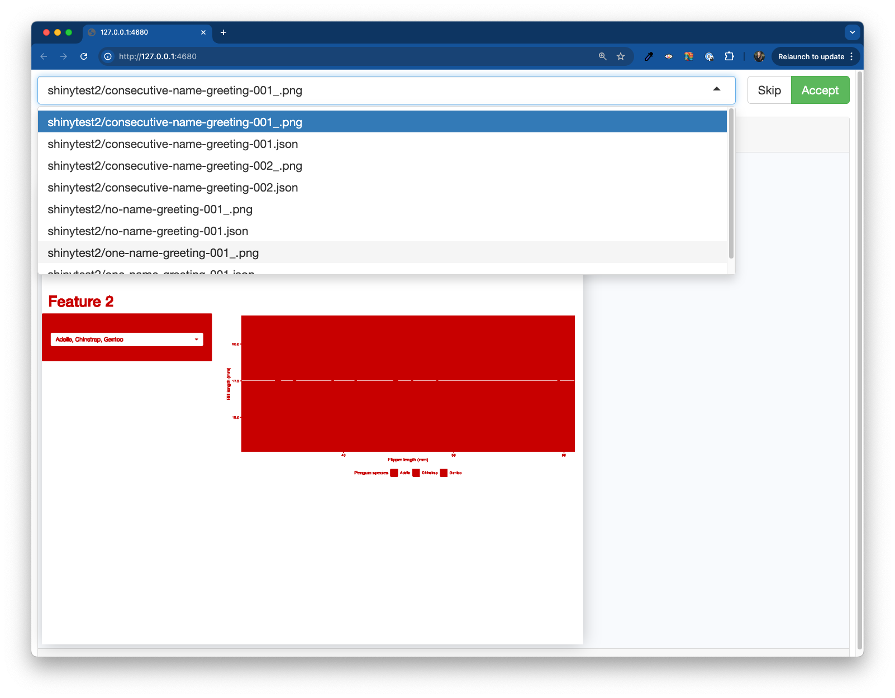
The scope of our assertions was too large
The scope of our test assertions was too large to isolate the behavior that we were looking to test.
Let’s look at our one-name-greeting-001_.png snapshot as an example to better understand why our first four tests of feature 1 (greeting) failed:
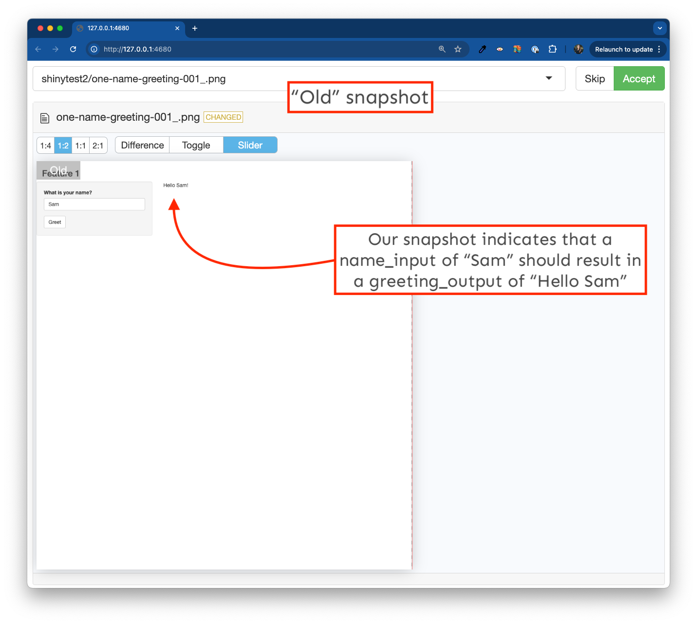
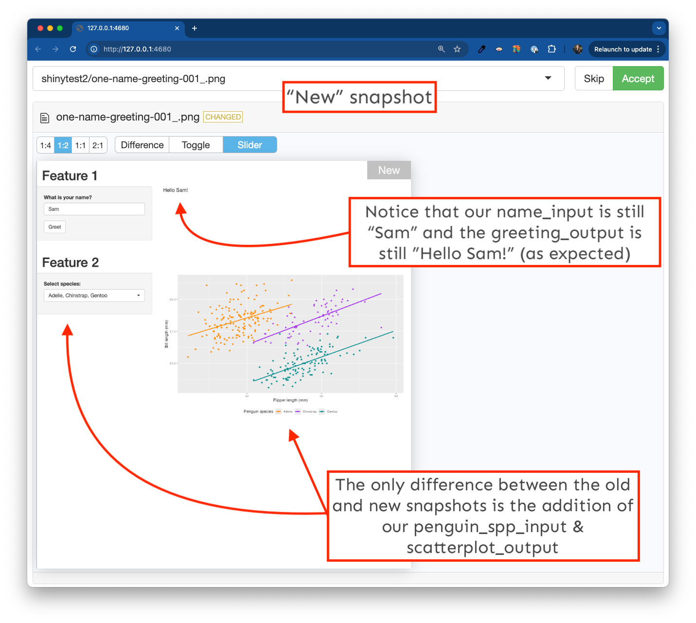
The scope of our assertions was too large
The scope of our test assertions was too large to isolate the behavior that we were looking to test.
Our one-name-greeting-001.json file provides an alternative view.
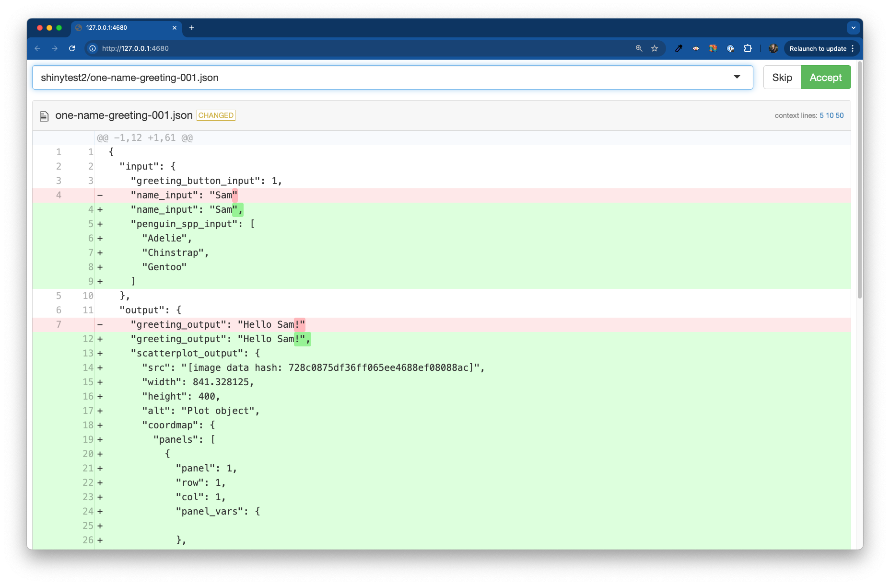
The scope of our assertions was too large
Our test failed, despite the behavior of our test subject not changing (in other words, our test failed, even though the expected output, “Hello Sam!” stayed the same.)
A good test is able to isolate the behavior of it’s subject so that you can trust the result of the test. In this case, our tests failed when they shouldn’t have…
Therefore, we need to modify our tests so that they capture a targeted value expectation, rather than the state of our entire application. For example:
After updating your tests, click Run Tests. They all should fail. You can check out the Tests > Output tab to explore the diffs, or launch the snapshot reviewer:
Targeted value expectations snapshot a specified output(s) . . .
…as opposed to the default, which is to snapshot the entire application. This is what we want!
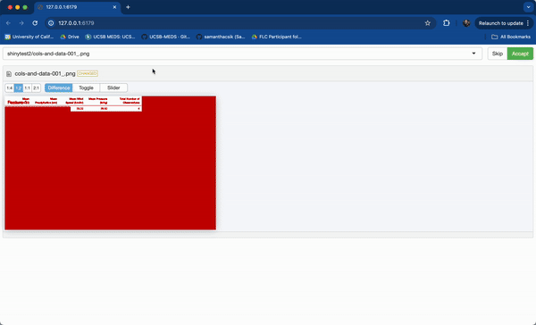
Accept all new snapshots – all tests should now pass when you rerun your test file.
Make a targeted value expectation using the test recorder
Let’s write a test that makes a targeted value expectation for our second assertion of feature 2 (copied below from our original table):
Action(s): Deselect Adelie
Expectation: A scatterplot with just Gentoo & Chinstrap data rendered
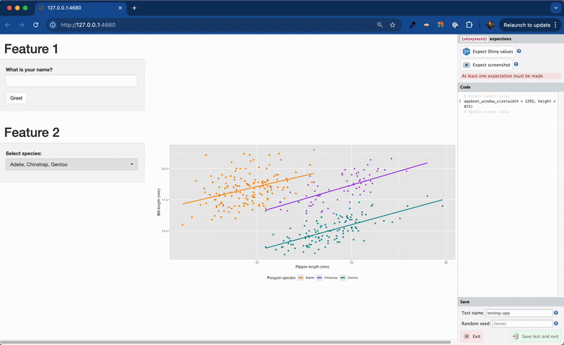
Steps:
(1) Run shinytest2::record_test("testing-app") in the Console
(2 Click on the pickerInput and deselect Adelie
(3) Hold down the cmd/ctrl button on your keyboard, then click on the output – for us, that’s the updated plot that displays just Gentoo & Chinstrap data
(4) Give the test a unique name (e.g. deselect-adelie) > click Save test and exit (tests should automatically execute and pass!)
Write a test for the final feature 2 assertion
See the original table for a reminder of our defined action and expectation. When complete, your updated test-shinytest2.R file should look similar to this (and all tests should pass!):
ui <-fluidPage(# Feature 1 ------------------------------------------------------------------h1("Feature 1"),# fluidRow (Feature 1: greeting) ----fluidRow(# greeting sidebarLayout ----sidebarLayout(# greeting sidebarPanel ----sidebarPanel(textInput(inputId ="name_input",label ="What is your name?"),actionButton(inputId ="greeting_button_input",label ="Greet"), ), # END greeting sidebarPanel# greeting mainPanel ----mainPanel(textOutput(outputId ="greeting_output"), ) # END greeting mainPanel ) # END greeting sidebarLayout ), # END fluidRow (Feature 1: greeting) tags$hr(),# Feature 2 ------------------------------------------------------------------h1("Feature 2"),# fluidRow (Feature 2: file upload) -----fluidRow(# file upload sidebarLayout ----sidebarLayout(# file upload sidebarPanel ----sidebarPanel(# upload fileInput -----fileInput(inputId ="csv_input",label ="Upload your CSV file:",multiple =FALSE,accept =c(".csv"),buttonLabel ="Browse",placeholder ="No file selected"), # END upload fileInput ), # END file upload sidebarPanel# fileInput mainPanel ----mainPanel(tableOutput(outputId ="summary_table_output") ) # END file upload mainPanel ) # END file upload sidebarLayout ), # END fluidRow (Feature 2: file upload) tags$hr(),# Feature 3 ------------------------------------------------------------------h1("Feature 3"),# fluidRow (Feature 3: plot) -----fluidRow(# plot sidebarLayout ----sidebarLayout(# plot sidebarPanel ----sidebarPanel(# penguin spp pickerInput -----penguin_spp_pickerInput(inputId ="penguin_spp_input") ), # END plot sidebarPanel# plot mainPanel ----mainPanel(plotOutput(outputId ="scatterplot_output") ) # END plot mainPanel ) # END plot sidebarLayout ) # END fluidRow (Feature 3: plot)) # END fluidPage
(File is unchanged)
~/testing-app/server.R
server <-function(input, output) {# Feature 1 ------------------------------------------------------------------# observe() automatically re-executes when dependencies change (i.e. when `name_input` is updated), but does not return a result ----observe({# if the user does not type anything before clicking the button, return the message, "Please type a name, then click the Greet button." ----if (nchar(input$name_input) ==0) { output$greeting_output <-renderText({"Please type a name, then click the Greet button." })# if the user does type a name before clicking the button, return the greeting, "Hello [name]!" ---- } else { output$greeting_output <-renderText({paste0("Hello ", isolate(input$name_input), "!") }) } }) |># Execute the above observer once the button is pressed ----bindEvent(input$greeting_button_input)# Feature 2 ------------------------------------------------------------------# file upload ---- output$summary_table_output <-renderTable({# NOTE: `input$csv_input` will be NULL initially# after user selects / uploads a file, it will be a df with 'name', 'size', 'type', 'datapath' cols# 'datapath' col will contain the local filenames where data can be found# see: https://shiny.posit.co/r/reference/shiny/1.4.0/fileinput# save input value to object named `inputFile` ---- inputFile <- input$csv_input# if a file has not been uploaded yet, don't return / print anything ----if(is.null(inputFile))return(NULL)# read in file using it's datapath ---- df_raw <-read_csv(inputFile$datapath)# validate that the uploaded CSV has the expected column names ---- required_cols <-c("temp_c", "precip_cm", "wind_kmhr", "pressure_inhg") column_names <-colnames(df_raw)validate(need(all(required_cols %in% column_names), "Your CSV does not have the expected column headers.") )# return summarized data in a table ---- df_summary <- df_raw |>summarize(avg_temp =mean(temp_c),avg_precip =mean(precip_cm),avg_wind =mean(wind_kmhr),avg_pressure =mean(pressure_inhg),tot_num_obs =length(temp_c) ) |>rename("Mean Temperature (C)"="avg_temp","Mean Precipitation (cm)"="avg_precip","Mean Wind Speed (km/hr)"="avg_wind","Mean Pressure (inHg)"="avg_pressure","Total Number of Observations"="tot_num_obs")return(df_summary) })# Feature 3 ------------------------------------------------------------------# filter penguin spp (scatterplot) ---- filtered_spp_scatterplot_df <-reactive({validate(need(length(input$penguin_spp_input) >0, "Please select at least one penguin species to visualize data for.")) penguins |>filter(species %in% input$penguin_spp_input) })# render scatterplot ---- output$scatterplot_output <-renderPlot({ggplot(na.omit(filtered_spp_scatterplot_df()),aes(x = bill_length_mm, y = bill_depth_mm,color = species, shape = species)) +geom_point() +geom_smooth(method ="lm", se =FALSE, aes(color = species)) +scale_color_manual(values =c("Adelie"="darkorange", "Chinstrap"="purple", "Gentoo"="cyan4")) +scale_shape_manual(values =c("Adelie"=19, "Chinstrap"=17, "Gentoo"=15)) +labs(x ="Flipper length (mm)", y ="Bill length (mm)",color ="Penguin species", shape ="Penguin species") +theme(legend.position ="bottom") })} # END server
(Newly added file; be sure to place it inside the new testing-app/R/ subdirectory)
Rather than running your app and manually checking to see if your pickerInput still works in the same way, you can instead run your tests, which will automatically check for you!
Open test-shinytest2.R, click Run Tests, and watch all of your tests pass (or at least, they should!):
[ FAIL 0| WARN 1| SKIP 0| PASS 9 ]
Automated tests allow you to confidently refactor code / make sweeping changes while being able to verify that the expected functionality remains the same.
A couple final tips for testing
Use record_test() fairly often – make a test recording for each feature of your app (many little recordings are encouraged!)
Think of both the most common and uncommon pathways that your user may take when interacting with your app. E.g. your user types in a name, then deletes everything, then clicks the “Greet” button…would you app handle that use case?
This is only a brief intro to {shinytest2}! Dig into the documentation to learn more.